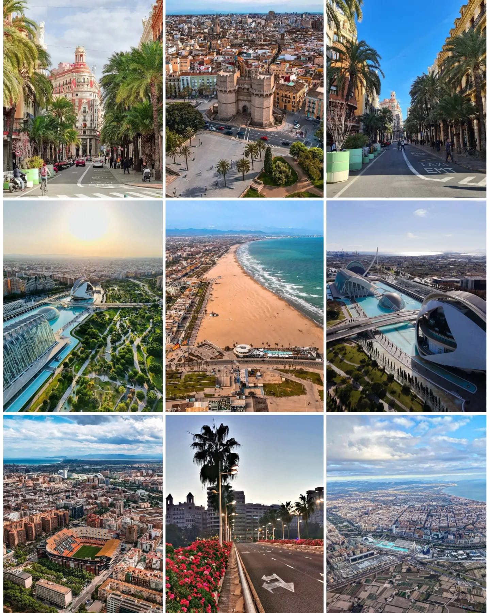
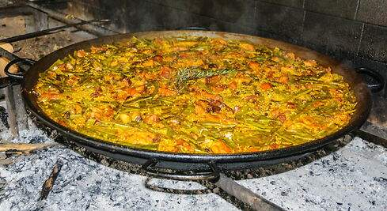
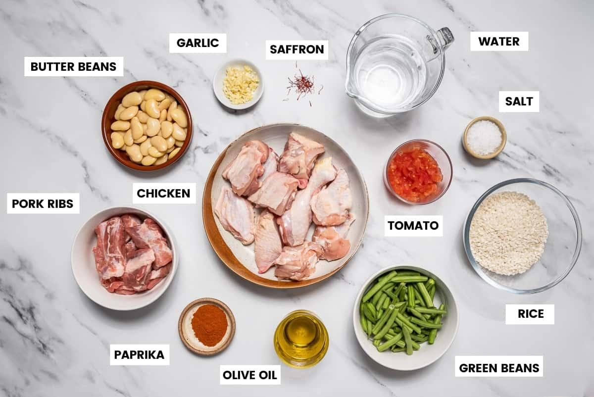

Valencia The City of the Sun
Valencia is famous for the City of Arts and Sciences, the Valencia Cathedral, the Old Town, the Central Market, and being the birthplace of paella. Valencia is also popular for its peculiar museums, quirky festivals, beautiful sunny weather, and fantastic sandy beaches
How would you describe Valencia?
VALENCIA: "Bright City"
One of the biggest cities in Spain, and among the most livelies. It is located at the Mediterranean sea, and you will find beaches right in the very heart of it.LA PAELLA VALENCIANA !
The region where this famous rice dish traditionally comes from (although eaten nowadays throughout all Spain) is Valencia, in the Mediterranean east coast of Spain. The proximity of the “albuferas” and marshlands (which are very characteristic landscapes), made the existence of rice fields possible and set like this the perfect conditions for the creation of this dish (there are not many zones where you can cultivate rice). So as you can imagine, the rice, which the Arabs introduced in Europe 800AD, is key to good Paella valenciana. Like with sushi, it needs to have the perfect consistency in order to reveal its best flavor and texture. It might seem basic, but it is the pillar everything builds up on.
 